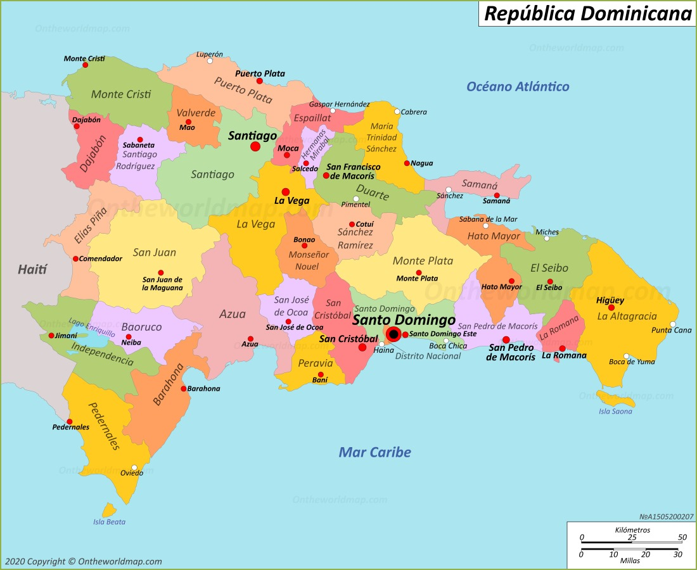

Contact Us
Have a question, suggestion, or want to collaborate? Send us a message!
Have a question, suggestion, or want to collaborate? Send us a message!
Dominican food is a mix of Spanish, African, and indigenous influences. Meals are rich in flavor, often including rice, beans, meats, and tropical vegetables. These recipes represent tradition, culture, and family gatherings.

We are constantly adding new recipes to our collection. Stay tuned for more delicious Dominican dishes.